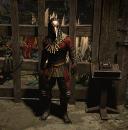

Ейнар, надає гравцеві введення в "Бестіарій", полювання на звірів і способи захоплення їх тенета. Будучи майстром, Ейнхар безпосередньо допомагає гравцеві в полюванні на звірів, нападаючи на монстрів і кидаючи тенета.
У зонах, де може з 'явитися Ейнар, зона буде містити спеціальних звірів, позначених їх іконами. Буде 3-5 жовтих звірів (Середня складність) і 1-2 червоних звірів (Жорстка складність). Жовті звірі мають 1 бестіарський мод, тоді як червоні звірі мають 2 бестіарські моди.
Коли звіра доведуть до слабкого здоров 'я, з' явиться Ейнар. Він невразливий НІП і атакує далекобійними пострілами, а також залпом пострілів і бомб. У нього також є аура, яка дає здоров'я від нанесеного пошкодження ворогів. Ейнар кине тенета на ослаблених звірів, захоплюючи їх і переміщаючи в Звіринець. Звірі не можуть бути вбиті.
Як тільки всі звірі в зоні будуть захоплені, місія буде завершена і Ейнар покине район.